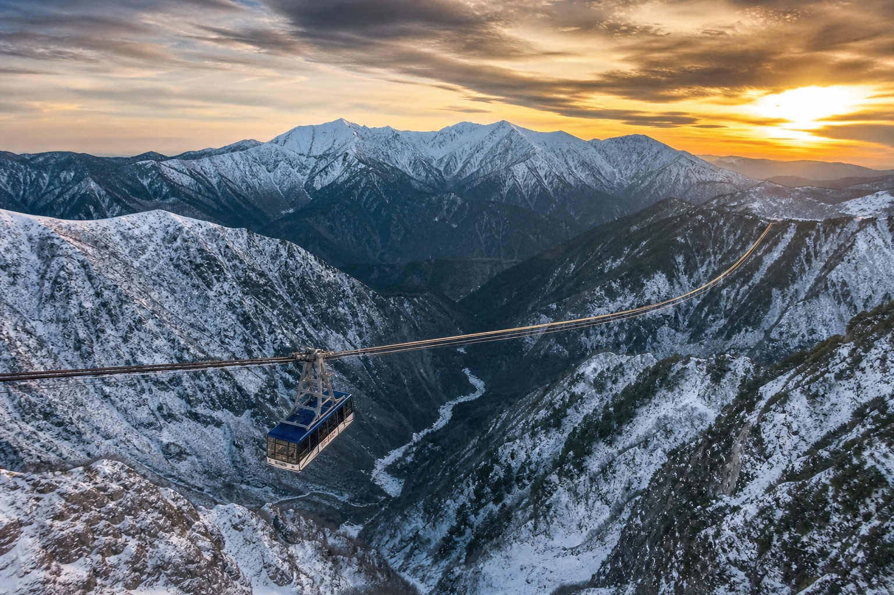
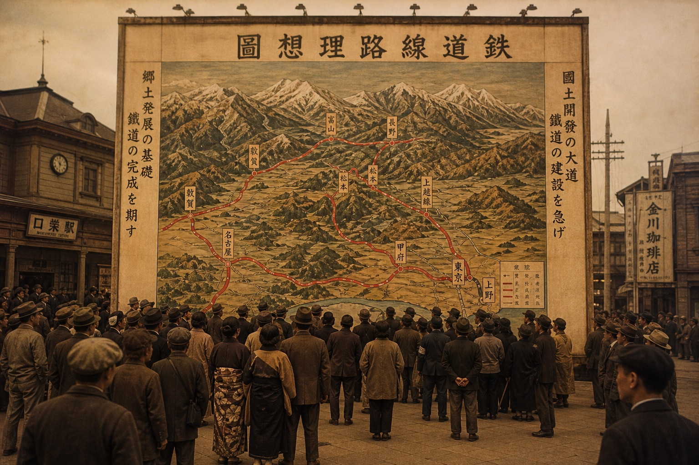
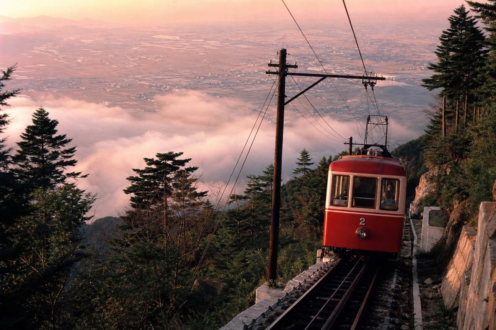
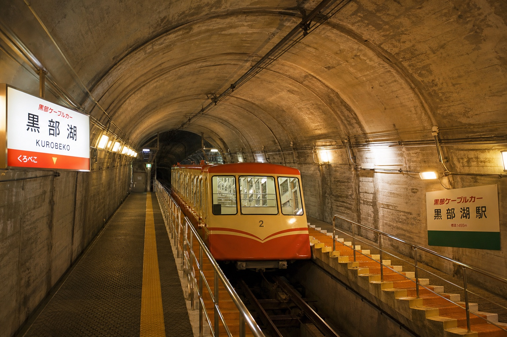
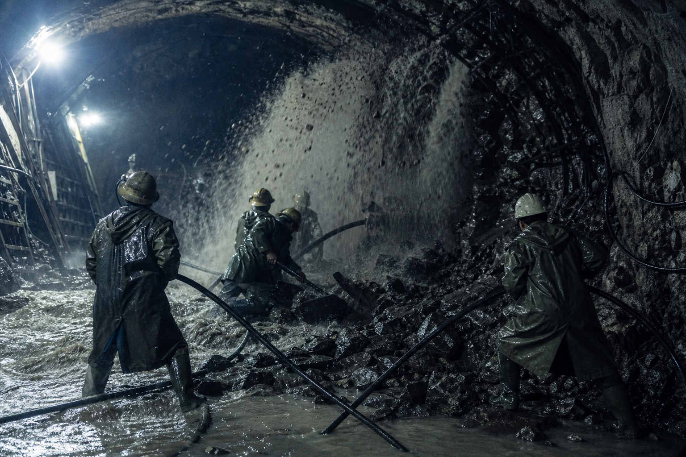
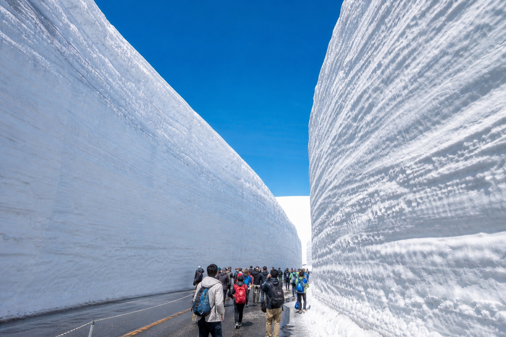

1952年到1971年，一群人用纜車、巴士、無軌電車、纜索、隧道——六種交通工具，把富山與長野之間三千公尺等級的北阿爾卑斯山脈鑿穿、架起、接通。這不是一條天然存在的路，是花了二十年，一段一段用命拼出來的路。
2026 實拍旅記｜封山前的立山黑部 →佐伯宗義，1930年創立富山電気鉄道（後來的富山地方鉄道）的實業家兼政治家，一生懷抱著「日本海側與太平洋側均衡發展」的理念。他把立山連峰所在的這片山岳地帶稱為「立山自然麗嶽殿」，並構想出一條貫穿山脈、連接富山與長野的觀光交通路線。
1952年（昭和27年）4月，由富山地方鉄道、關西電力、北陸電力三家公司合資成立立山開発鉄道，正式啟動這項計畫。公司名稱後來定為「貫光」——「貫」取時間之意，「光」取宇宙空間之意，同時也暗喻著「貫穿立山連峰」。這個帶著哲學意味的命名，成了往後二十年工程的精神註腳。
立山黑部這條路，不是官方規劃出來的，是一個人用四十年的固執闖出來的。認識這位創辦人的前半生，才會明白「貫光」這兩個字裡的份量。

佐伯宗義出生於立山山腳下的蘆峅寺，16歲那年家中事業失敗，他隻身離家上京。輾轉之間，他接手了一家瀕臨破產的福島輕便鐵道——信達軌道，在完全沒有電氣化資金的情況下，靠著低價買進暴跌股票、四處奔走遊說銀行，硬是把公司救了回來。
帶著這段經驗，他回到故鄉富山。當時富山縣內有八家彼此不相往來的民間鐵道，各自盤據一方，佐伯稱之為「八俣の大蛇」。1930年2月11日，他以150萬圓資本創立富山電気鉄道，並在富山車站前立起一面18公尺見方的巨大看板——畫著以立山連峰為背景的「縣一市街化」交通理想圖，還大膽地把競爭對手的路線全部塗成紅色。這塊看板立刻捅了馬蜂窩，抗議電話、上門興師問罪的人絡繹不絕，但也讓這個瘋狂的構想，一步步變成了現實。
要把散落各處的路線接成一張網，勢必要跟既得利益者硬碰硬。佐伯宗義晚年的自傳裡，留下了幾段他親口講述的交手紀錄。
富山縣土木界大老加藤金次郎斷言：河床太高、河面太寬，架橋不可能，就算蓋了也不划算。
佐伯回敬：「田舎の技術では出来ないかもしれないが、都会の技術では出来る」——鄉下的技術做不到，都市的技術做得到。橋最後架成了。
為了讓鐵路穿越黑部鐵道的路權，社長池尾芳蔵當面撂下重話拒絕協商。
幾番周旋後，池尾仍鬆了口：「何とかしてやらねばなるまい」，廢除既有支線讓出通道——路通了，恩怨也放下了。
財界大老根津嘉一郎推薦他接掌西武鐵道，銀行還主動提議一併解決富山電鉄的資金問題——極具誘惑的條件。
他徵詢母親的意見，母親只說了一句：「電鉄に協力してくれた多くの人に損をかけているではないか」——你還欠著支持你的人一份責任。他婉拒了。
婉拒邀約後不久，興業銀行總裁結城送來一幅親筆題字「万里一条鉄」，這幅字至今仍懸掛在富山地方鉄道本社。
二十多年後，他把同樣的固執，用在了一整座北阿爾卑斯山脈上——這一次，他要貫穿的不是縣內路網，是一座山。
從立山纜車動工到立山飯店開幕，整條路線分成五個工程階段陸續完成，每一段都各自解決了不同的地形與技術難題。以下時間軸整理公司沿革與五大工程的關鍵節點。
「一県一市街化」構想的起點，也是日後立山黑部開發計畫的企業根基，即今日富山地方鉄道的前身。
富山地方鉄道、關西電力、北陸電力三社合資，以整備立山山岳地域觀光交通體系為目標，同月立山纜車動工，二十年工程正式揭幕。
1954年8月立山纜車開通；高原巴士路線分段延伸，1964年6月終於抵達室堂，總長23公里，爬升約1,500公尺。
與立山開発鉄道並行存在的新公司，日後負責黑部纜車、立山ロープウェイ等長野側後段工程的興建與營運。
三項最艱難的地下與高空工程同時展開，分別在1969至1970年間陸續通車，是整條路線技術難度最高的階段。
立山隧道巴士通車、高原巴士除雪作業完成後，立山黑部アルペンルート正式全線貫通，從動工算起，歷時約二十年。
海拔2,450公尺，日本最高住宿設施，兼具旅館、救護與避難機能，為這段二十年工程畫下最後一筆。
兩家並行了半世紀的公司正式合而為一，統一以「立山黒部貫光株式会社」之名，經營至今的整條路線。
整條路線最先動工的，是立山站到美女平之間僅1.3公里的立山纜車——距離很短，工程卻一點都不簡單。

1952年12月動工的立山纜車，路線雖短，但沿線彎道眾多、坡度複雜，光是軌道線形的設計就耗費超過一年。1954年8月纜車正式開通；隔年因為真川橋梁的興建延誤，還一度在左岸設置「臨時立山站」應急，直到1955年橋梁完工，富山到立山的鐵路線才算真正連通。
纜車通了之後，下一段美女平到室堂的高原巴士道路又是另一場硬仗——1953年動工，起初只通到弘法一段，早期的巴士甚至得先裝上立山纜車的貨運車廂運上山，再用繩索一段段吊起，才能繼續往上鋪路。這段路直到1964年6月才全線貫通至室堂，全長23公里，爬升約1,500公尺，沿線的彌陀原站與天狗平，至今仍是重要的中繼站。
黑部纜車原本的計畫是興建一條公路，但施工難度高、成本昂貴，加上環保與雪害的考量，最終改弦易轍，成為日本唯一一條全線地下化的纜車。

1964年，關西電力經營的無軌電車已經先一步在扇沢與黑部湖之間營運，成為西側入口的接駁動脈。輪到黑部纜車登場時，工程團隊評估了興建高架或地面路線的方案，但陡峭地形加上頻繁的雪崩落石，讓地面工程的成本與風險都難以承受。
1966年3月正式開始挖掘，最終方案是把整條纜車路線完全埋進山體之中，同步達成防災與環保兩個目標。由於施工現場位處陡峭懸崖，材料與機械只能靠索道、甚至出動大型直昇機才能運抵。1969年7月，黑部纜車舉行通車儀式，成為全日本唯一一條全線地下化的纜車路線。
這一帶雪崩與落石頻繁，為了不在山谷中立柱、把破壞環境的機會降到最低，工程團隊決定挑戰前所未有的無支柱單跨設計——但要撐起1,710公尺的跨距，得先解決纜索本身的問題。
1,710公尺的跨距超過當時的法定限值，最終取得特別許可才得以興建。
為此工程量身開發的高性能鋼纜，直徑達5.4公分，單根重量高達28噸。
這麼重的纜索，立山纜車根本無法運送，最後改用拖車，一路經由關電隧道、越過黑部水庫堰堤頂端，才把它運到施工現場。
1969年12月，纜索終於架設完成，工程團隊選擇在猛烈的暴風雪中進行運行測試——山區施工季節有限，等不起下一個好天氣。
大観峰站建於標高2,316公尺的斷崖絕壁上，通車後，這條沒有一根柱子的纜索，成了整條路線最具代表性的畫面之一。
立山隧道是整條路線最後、也最艱難的一段——3.7公里的距離,原本應該是相對單純的工程,卻因為地質條件,拖成了一場長達五年的攻防戰。

1966年4月，室堂與黑部水庫兩端同時開挖立山隧道。挖到一半，工程隊一再撞上「破砕帯」——地質學上指軟弱、破碎的岩層帶，湧水與崩落的風險都極高。最嚴重的一次，每分鐘竟湧出高達63噸、攝氏僅2.5度的泥水，濁流灌進隧道，工程被迫多次中斷。
面對破砕帯，工程人員能做的只有兩件事：繞開它，或是灌注化學藥劑把地層加固後再繼續挖。隧道裡除了設計上的兩處大彎道之外，還多出三處看似多餘的輕微迂迴——那不是設計失誤，而是每一次繞開破砕帯留下的施工痕跡，是這條隧道走過的路,比地圖上看起來曲折得多。
1969年12月，隧道終於貫通；直到1971年4月，隧道巴士才正式通車——足足晚了兩年，是整條路線裡拖得最久、也最驚險的一段。
全線開通後，旅客要從富山側走到長野側，得依序換乘六種完全不同的交通工具——這也是立山黑部路線最獨特的地方：沒有一種單一載具能獨自完成這趟旅程,因為沒有一段地形是一樣的。
1954年通車，1.3公里彎道密集的登山纜車，是整趟旅程的起點。
1964年全線貫通，23公里山路爬升約1,500公尺，沿途經過彌陀原、天狗平。
1971年通車，穿越3.7公里、歷經五年破砕帯攻防戰才貫通的立山隧道。
1970年通車，1,710公尺日本首見無支柱單跨纜索，飛越整座深谷。
1969年通車，全日本唯一全線地下化的纜車，為了防雪害與環保而藏進山體。
1964年起營運，穿越關電隧道抵達長野側終點扇沢，完成整趟山脈貫穿。
| 建設期間 | 1952年12月–1971年6月（約20年） |
| 立山纜車 | 1.3km，1954年8月通車 |
| 高原巴士道路 | 23km，爬升約1,500m，1964年6月全線貫通 |
| 黑部纜車 | 全線地下化，1969年7月通車 |
| 立山ロープウェイ | 1,710m無支柱單跨，鋼纜直徑5.4cm・重28噸，1970年7月通車 |
| 立山隧道 | 3.7km，1969年12月貫通，1971年4月通車 |
| 立山飯店 | 海拔2,450m，1972年9月開幕，日本最高住宿設施 |
今天旅客花不到一天就能走完的路線，是當年工程團隊用二十年、跨越五個工程章節、對抗破砕帯與雪崩換來的成果。「貫光」這個名字裡藏著的「貫穿立山連峰」的願景，最終真的成真了。
2005年10月，立山黑部貫光吸收合併立山開発鉄道，兩家並行半世紀的公司合而為一,統一經營這條至今仍在運行的路線。
1984年5月，一座高2.3公尺的佐伯宗義銅像在富山城址公園落成，後因公園整建遷至呉羽山，至今每年仍有上百萬人次經過——那個從蘆峅寺山里走出來、拿著看板闖蕩的年輕人，最終真的把自己的名字，刻進了他一輩子想貫穿的這片山脈裡。
1971年全線通車那天，這條路完成的任務其實只有一個——把富山和長野接起來。但接下來半世紀，它意外催生的東西，遠遠超出了當初的工程藍圖。

室堂一帶是全球數一數二的豪雪地帶，每年冬天，高原巴士道路會被積雪完全掩埋。為了在春天準時通車，除雪車必須把路面鑿出一條通道——而這條通道兩側，就這樣堆出了高達數公尺、甚至超過20公尺的垂直雪壁。
這原本只是開路必經的工程副產品，卻在1970年代後意外變成了立山黑部最具代表性的景觀，被取名為「雪の大谷」。每年4月中旬全線開通後，遊客可以走進這條由雪牆夾出的峽谷步行區——一個純粹因為「要除雪才能通車」而誕生、卻紅遍全世界的景點，是這條路線最意想不到的遺產。
黑部水庫原本是關西電力純粹為了發電而興建的秘境工程，一般人根本無法進入。阿爾卑斯路線通車後，水庫堰堤成了旅客會經過的必訪一站，每年夏季的觀光放水更成了獨立的觀光賣點。
一座只服務電力公司的秘境水壩，因為這條路，變成了任何人都能站上去俯瞰的觀光地標。
2017年，「立山黑部アルペンルート」與「雪の大谷・室堂エリア」在米其林緑色指南（富山WEB版）雙雙獲得三星評等，成為國際旅遊指南認證的世界級景點。
富山機場開通韓國、中國、台灣、泰國等國際航線後，這條路線也成了外國旅客深入日本北阿爾卑斯的主要入口之一，是富山縣觀光國際化最具體的成果。
全線地下化的黑部纜車、日本首見的無支柱單跨纜索、與破砕帯周旋出來的隧道彎道——這些為了克服特定地形而生的解法，後來成了日本各地山岳觀光開發評估環保與工程可行性時，反覆被引用的案例。
它證明了一件事：山岳觀光不必以破壞地形為代價，工程可以為了自然環境彎道而行。